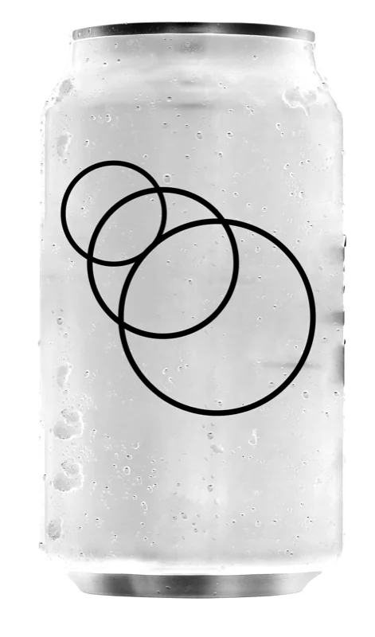

InDesign plugin
Assemblr help
Every control in the panel, and the everyday jobs step by step.
Every control, explained
Assemblr works from one panel in InDesign: Plugins ▸ Assemblr. It has one tab, Products, with three tiles: Layout, for the product you are working on; Products, for every product in the document; and Overlays, for badges and prices on a product's corners. Pick a tile to see it; each number says what a part of the panel does, and the note beside it lights up as you point at it.
Products
Your placed images made into products, each laid out by what you can see in its pictures rather than their frames. Pick a tile to see its settings.
Assemble
Product
CansImages

PSD PSDPSDPSDPSD
PSDPSDPSDPSD
Products (3)
Page 2
PSDPSDPSDPSDPSDPSDPSDPage 3
PSDPSDPSDOverlays
Cans | Top right
Corner
In this document
Badges
Layout
Assemble for the images you select, then the selected product: its arrangement, its settings and its images.
The drawing
The product drawn above the card; the page follows when you let go. In Line-up, drag the end of the line round to turn the row (it snaps to 5°; hold Option for 1°) and out or in to set its size; hold Shift to only turn. Click one of the nine dots to choose where the product sits in its frame. Grid and Pins show bars for the space across and down, Mosaic a Rotation stepper for other packings, and Puzzle origin points to rest the images against. A locked image is drawn dashed.
Assemble
Shown while the selection holds placed images that are in no product. Assemble makes them one product, in the space they took up, laid out as a grid with automatic columns, in one undo step. The images move onto a layer named "Assemblr", and the product's frame, an empty rectangle round them that prints nothing, is the handle you move and resize it by. When Assemble cannot run, the line under it says why.
Arrangements
Line-up (one row with angle and perspective), Grid (rows and columns), Mosaic (scaled to fill the space), Pins (a bowling-pins formation) and Puzzle (tightly packed at equal area). Each lays the images out by their visible subject, and each keeps its own settings, so switching back finds them as you left them.
The product
Its name, the page it is on and how many images it holds. Products are named Product 1, Product 2 and so on; type a new name here and press Return to rename one.
Align images, Angle, Size, Scale, Bleed
Align images lines the images up on their top edges, middles or bottom edges. Angle turns the row, up to 90° either way; Size is how much of the space the row takes. Scale shrinks the whole arrangement inside its frame, and Bleed adds a margin round each picture's visible subject, as a share of its size. Each arrangement shows only what it uses: Grid its columns and rows (empty is automatic) and Space across and down, which overlap below 0; Mosaic and Puzzle a Breathing space; Pins a slider from Rack to Pyramid and Add row or Remove row. A box's chevron drops a slider down from it.
Add clipping path to alpha
Clips each picture to its cut-out, the outline of its transparency, so nothing outside the product shows.
Perspective
In Line-up and Pins: makes the far images smaller, as if the row went back into the page. 0 keeps every image the same size.
Re-fit
Lays the images out again with these settings. In Puzzle it nests them again round the images you placed by hand and the locked ones.
Reset
Puts the product back to this arrangement's automatic settings: equal sizes, hand rotation and shear cleared, locks kept in Puzzle and released in the other arrangements. Images removed from the layout stay out. One undo step.
Clear transformations
Shown once you have turned or scaled an image by hand. It sets those images upright, at an automatic size and crop, and lays them out again; the settings and locks stay. One undo step.
Swap order
Brings the other end of the row to the front, where the images overlap. In Grid it shows once a space is below 0, and chooses whether the upper or the lower rows sit on top.
Disassemble
Takes the product apart: its frame goes, and every image stays where it stands, on the Assemblr layer.
Disconnect
Stops Assemblr laying this product out, so your edits are left exactly as they are. Its controls dim until you Reconnect, which lays it out again with the images as they stand, sizes you set by hand kept; Reset reconnects it too.
Images
The product's images in their order, each tile its picture and file type. Drag a tile to reorder, or into another product's strip to move the image there. × removes an image from the layout: it leaves the page and its tile stays, dimmed; + on that tile puts it back at the end of the row. The + tile adds image files from disk. A tile marked GROUP is an InDesign group, laid out as one image.
Products
Every product in the document, page by page, each with its images, so you can move images between products.
Products
Every product in the document, and how many there are. The product you are working on is in bold.
Product name
Selects the whole product on the page: its frame, its images and its overlays. Then the Layout tile shows it.
Tags
Its image count, then Locked and a number when some of its images are locked with Object ▸ Lock (they stay where they are when it is laid out again), and Disconnected while Assemblr is leaving it alone; select it to Reconnect or Reset.
Disassemble
Takes the product apart: its frame goes, and every image stays where it stands.
+
Ends every strip: adds image files from disk to that product, without selecting it first.
Images
Drag a tile from one product's strip into another's and the image moves to that product; both are laid out again. A dimmed tile is an image removed from the layout: its + puts it back. A disconnected product's strip is dimmed and takes no drops.
Pages
A divider names the page where the list moves on to it: Page 3, Pages 4-5 for a product across the spine, and Pasteboard for a product off the pages. It is a heading only.
Overlays
Badges and prices on the corners of a product, for one product, a range of pages or the whole document.
The drawing
The product's image area at its own shape, a control on each corner: a dot where the corner holds overlays, a plus where it holds none. Click one to open that corner; the open corner is blue, and so are its overlays. A box drawn in orange is one this product or page set itself.
Where it applies
With a product selected, Product: and its name, for that product alone; click it off to edit its page instead. With no product selected, Document, which every product follows until it sets a corner of its own, and a chip per page: turn pages on to give them overlays of their own, which a page keeps when products move.
The corner
The product and the open corner, and what is on it, each with × to take it off. Follows the document, until you give it its own; then Apply document setting drops its own and shows the document's again, keeping its price.
Price
Type the product's price, such as $12.50. Its digits are written into your own price design, its styles kept, and each product types its own. A design with another field, such as Unit, gets a box of its own under the price.
Load badge… and Load price…
Bring new artwork into the document. Load badge… takes any files InDesign can place, PNG, PSD, PDF or AI. Load price… takes a folder of InDesign files with X where the digits go, such as $X.XX or XXc: no tagging needed, and each price is drawn with the design that fits it.
The document's overlays
Each badge and price set already in the document, as a + chip: click one to put it on this corner.
Apply this corner
To page makes this corner the same on every other product on this page; to document makes it the document's, for every product that follows it. Each product keeps its own price.
Corner and Stack
The four corners again: click another to move this corner's overlays there, or to swap them with what is there; they keep their settings. Stack lays them along the corner's top or bottom edge (Across) or its side (Down).
Size and spacing
Gap between the overlays, and Inset X and Y from the image area's edges, in the document's ruler units. Resize scale on makes them resize with the product. Each overlay fits in a Max width by Max height, in points or as a % of the product's image area.
Reports
What happened when the overlays were laid: "Overlays: 3 placed, 0 removed." A yellow triangle marks a problem, such as a badge that could not be loaded or a price no design fits.
In this document
Every badge and price set the document holds; × removes one from the list and from every product. A set lists its designs and what each spells, $X.XX say. A file marked cannot be found keeps working on the pages from the copy the document holds.
Quick help
The everyday jobs, step by step, and what to do when the panel tells you something. Every action in Assemblr is one step of Edit ▸ Undo.
How do I…
-
Make a product
- Place a few images with transparency, PSD or PNG cut-outs say, anywhere on one spread.
- Select them and open Plugins ▸ Assemblr.
- Click Assemble in the Layout tile. The images become one product in the space they took up, laid out as a grid.
-
Change how it is arranged
- Select the product: click one of its images, or its name in the Products tile.
- Pick Line-up, Grid, Mosaic, Pins or Puzzle at the top of the Layout tile.
- Drag the drawing or change a setting; the page follows when you let go.
-
Make a product bigger or smaller
- Turn on View ▸ Extras ▸ Show Frame Edges.
- With the Selection tool, click the edge of the product's frame, the empty rectangle round its images.
- Drag a handle: the images re-fit to the new size. Drag the frame and they move with it, onto another page too.
-
Add an image
- Click + at the end of the product's images and pick the files.
- Or place or drag a picture so its centre is inside the product's frame, on the product's layer ("Assemblr"). A picture on another layer is left alone, so a logo or a sticker can sit over a product.
- Or drag its tile from another product's images in the Products tile.
-
Take an image out
- × on its tile removes it from the layout; its tile stays, dimmed, and + puts it back.
- Drag it out of the product's frame and it is yours from then on; its tile dims.
- Delete it and it leaves the product altogether.
-
Move, scale, turn or crop an image by hand
- Edit the image as usual; Assemblr waits while it is selected.
- Click away. The product is laid out once: a crop is kept, a scale and a turn are kept in Line-up, Grid and Puzzle, and a moved image goes back to its place. The panel says what was not kept.
- Clear transformations in the Layout tile undoes the turns and scales.
-
Keep one image where it is
- Select it and choose Object ▸ Lock. The others fit round it.
- Object ▸ Unlock lets it join the layout again. Reset releases locks too, except in Puzzle.
-
Put a badge on a corner
- Select the product and open the Overlays tile.
- Click a corner on the drawing, then Load badge… and pick the artwork. It sits on its own layer, "Assemblr overlays", and follows the product when you move or resize it.
-
Show a price
- Make your price design in InDesign, with X where the digits go, $X.XX or XXc, and save it in a folder of its own.
- In the Overlays tile, open a corner and click Load price…, then pick the folder.
- Type the price in the box, $12.50 say. Several designs in one folder: each price takes the one that fits it.
-
Give every product the same overlays
- Choose Edit ▸ Deselect All. The Overlays tile now edits the Document.
- Set up its corners: every product follows them until you edit its own corner. Or, from a product, click Apply this corner to document.
-
Copy a product
Duplicate or copy and paste it, its frame and images together. The copy is a new product of its own.
-
Stop Assemblr touching a product, or take it apart
- Disconnect leaves it exactly as it is until you Reconnect.
- Disassemble takes it apart for good: every image stays where it stands.
When the panel says…
-
Assemble is greyed out
The line under it says why. Only placed images are assembled; an image already in a product, a locked image or one on a locked layer, a selection across two spreads, an image Automated Assemblr manages, or a locked or hidden Assemblr layer stops it. Unlock or show what it names and try again.
-
Laid out again once its images are deselected.
You are editing one of the product's images. Click away and it is laid out once.
-
2 images changed on disk
Their files were saved again since they were measured. Click Update to read them again and lay the product out; locked or turned images are left as they are.
-
Disconnected
Assemblr is leaving this product alone. Reconnect lays it out again with the images as they stand; Reset puts it back to the arrangement's automatic settings.
-
A dimmed tile
The image is removed from the layout. + on the tile puts it back at the end of the row, or drag the tile in among the others to put it back at that spot. A tile that says File not found has lost its file on disk.
-
A picture I placed did not join
It is on another layer. Move it onto the product's layer, "Assemblr", or add it with + in the strip.
-
cannot be found, or a yellow triangle in Overlays
A badge or price file has moved or gone. The overlays already on the pages keep working; load the file again from its new place to use it on more products.
-
'Price dollars' and 'Price dollars 2' are conflicting.
Two price designs of the same shape are in one folder, so neither can be chosen. Save each version in a folder of its own and load it with Load price…: each folder is a set of its own.
-
Warning: High resolution setting active
InDesign redraws more slowly in High Quality Display, and with Overprint Preview on. Switch to View ▸ Display Performance ▸ Typical Display while you lay products out.